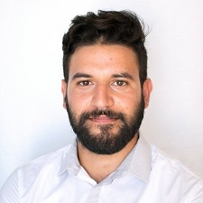

Ayoub Ben hadj youssef
Ingénieur Test & validation
Déscription
Je suis Ayoub ben hadj youssef 33 ans, ingénieur test et validation chez Talan depuis Avril 22
passioné par le testing, je suis convertis aprés avoir mon carrière de cinq ans en tant qu'un ingénieur chimie procédés chez
Promosciences, Hyundai Engineering et SGS Tunisie.
Mon expérience
Mes compétences
Ma formation
Mon expérience
-
Talan Academy
Depuis Avril 2022:
Formation Test et validation
Savoir coder en Java OOP
Savoir creer une base de données sur MySQL
Developper un site web avec HTML et CSS
-
Promosciences
De Mars 2020 jusqu'à Mai 2022
Consultant Mise en service
Prospection des nouveaux clients dans le marché
Commercialisation et installation des apareils de mesures et d'analyses chimiques
Mise en service des apareils avec l'installationdu laboratoire
-
Hyundai Engineering
De Fevrier 2019 jusqu'à Fevrier 2020
Consultant Mise en service
Prospection des nouveaux clients dans le marché
Commercialisation et installation des apareils de mesures et d'analyses chimiques
Mise en service des apareils avec l'installationdu laboratoire
-
SGS Tunisie
De Janvier 2017 jusqu'à Janvier 2019
Inspecteur Qualité
Inspection des navires de transport des carburants
Inspection de l'environement du stockage des carburants au sein du depot de Rades et STIR
Inspection de la qualité de service des stations de services du TOTAL et SHELL dans les regions nord du pays
Mes compétences
-
Developper en Java
-
Implantation d'une BD sur MySQL
-
Developper un site Web statique
-
Formation Test et validation
Avril 2022
Talan Academy
Savoir coder en Java OOP
Savoir creer une base de données sur MySQL
Developper un site web avec HTML et CSS
-
Les fondamentaux dU Project Management
Decembre 2019
University of Virginia
Maitriser le management des grands projets
Maitriser comment minimiser les delias des taches
Projet type sur MS Project
-
Ingénieur Chimie Procédés
Octobre 2015
Ecole Nationale d'Ingénieurs de Gabes
Simulation et dimensionnement des unités de traitement chimiques
Savoir les notions de base de transfert de matiere et energie
Etudier l'optimisation energytique et la protection environemental